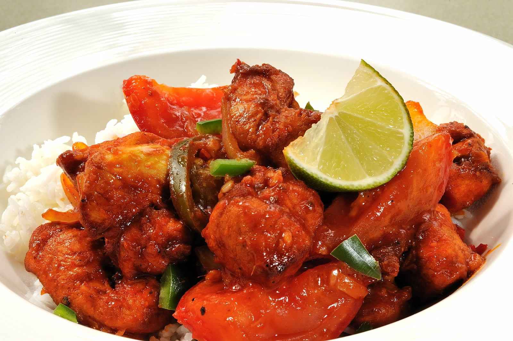

Fried Rice
| Item Code | Dish Name | Description | Price (LKR) |
|---|---|---|---|
| 001 | Mixed Fried Rice | Mixed fried rice is a quick and tasty dish made by stir-frying cooked rice with an assortment of ingredients like vegetables, protein (chicken, shrimp, or tofu), and seasonings such as soy sauce and garlic. | 600 |
| 002 | Chicken Fried Rice | Chicken fried rice is a delicious and popular dish featuring diced chicken, cooked rice, and a medley of vegetables stir-fried together in a wok or skillet. | 580 |
| 003 | Fish Fried Rice | Fish fried rice is a delightful and flavorful dish made by stir-frying cooked rice with pieces of tender fish and an array of vegetables. | 550 |
| 004 | Egg Fried Rice | Egg fried rice is a simple yet delicious dish made by stir-frying cooked rice with scrambled eggs and a mix of vegetables. | 500 |
| 005 | Vegetable Fried Rice | Vegetable fried rice is a flavorful and nutritious dish created by stir-frying cooked rice with a colorful assortment of vegetables. | 500 |
| 006 | Chopsucy Rice | Chopsuey rice is a delicious and vibrant dish that combines stir-fried rice with a flavorful medley of vegetables and protein, often featuring diced chicken, pork, or shrimp. | 650 |
Noodles

| Item Code | Dish Name | Description | Price (LKR) |
|---|---|---|---|
| 007 | Mixed Noodles | Mixed noodles is a delectable dish that brings together a variety of noodles, proteins, and vegetables in a flavorful stir-fry. | 600 |
| 008 | Chicken/ Fish Noodles | Chicken or fish noodles are flavorful and satisfying dishes featuring either diced chicken or fish combined with noodles in a delicious stir-fry. | 560 |
| 009 | Veg/ Egg Noodles | Vegetable and egg noodles are a delightful and versatile dish featuring a blend of stir-fried noodles with colorful vegetables and scrambled eggs. | 540 |
| 010 | Chopsucy Noodles | Chopsuey noodles present a delightful fusion of stir-fried noodles with a flavorful chopsuey-style mix of vegetables and protein. | 600 |
Kottu


| Item Code | Dish Name | Description | Price (LKR) |
|---|---|---|---|
| 011 | Cheese Kottu | Cheese kottu is a delightful and flavorful South Asian dish that originates from Sri Lanka. It is a variation of kottu roti, a popular street food. The dish features shredded flatbread, often combined with vegetables, eggs, and a generous amount of melted cheese. | 550 |
| 012 | Mixed Kottu | Mixed kottu is a versatile and flavorful South Asian dish that belongs to the popular street food category. It is an extension of the traditional kottu roti and often includes a combination of proteins such as chicken, beef, or shrimp, mixed with shredded flatbread, vegetables, and an array of spices and sauces. | 550 |
| 013 | Chicken Kottu | Chicken kottu is a flavorful and popular South Asian dish, particularly associated with Sri Lankan cuisine. It is a type of kottu roti, a street food favorite. The dish typically consists of shredded flatbread, combined with diced or shredded chicken, vegetables, and an assortment of spices and sauces. | 500 |
| 014 | Fish Kottu | Fish kottu is a flavorful and distinctive South Asian dish, particularly popular in Sri Lankan cuisine. This variation of kottu roti features shredded flatbread mixed with pieces of fish, vegetables, and an assortment of spices and sauces. | 500 |
| 015 | Egg/ Veg Kottu | Egg and vegetable kottu is a delicious and versatile South Asian dish, commonly enjoyed in Sri Lankan cuisine. This variation of kottu roti combines shredded flatbread with eggs and an assortment of vegetables, creating a flavorful and textured stir-fry. | 480 |
Portions

| Item Code | Dish Name | Description | Price (LKR) |
|---|---|---|---|
| 016 | Deviled Chicken | Deviled chicken is a popular and spicy Sri Lankan dish that features tender chicken pieces stir-fried with a flavorful blend of spices and a tangy sauce. | 600 |
| 017 | Prawns | Prawns portion typically refers to a serving of prawns or shrimp prepared in a specific dish or style. | 670 |
| 018 | Cuttlefish | Cuttlefish portion refers to a serving of cuttlefish, a type of cephalopod related to squids and octopuses. | 670 |
| 019 | Fish | Fish portion typically refers to a serving of fish, prepared and cooked in a specific way. | 600 |
| 020 | Chopsucy | Chopsuey portion typically refers to a serving of chopsuey, a popular and versatile stir-fried dish that originated in Chinese cuisine but has been adapted in various ways across different cultures. | 570 |
Soup
| Item Code | Dish Name | Description | Price (LKR) |
|---|---|---|---|
| 021 | Chicken/ Vegetable | Soup is a liquid food typically made by simmering a variety of ingredients, such as vegetables, meat, or legumes, in a flavorful broth or stock. | 400 |
Macaroni
| Item Code | Dish Name | Description | Price (LKR) |
|---|---|---|---|
| 022 | Chicken | A dish that features cooked macaroni pasta combined with chicken and various other ingredients. | 600 |
| 023 | Mixed | A dish that combines macaroni pasta with a diverse assortment of ingredients, often resulting in a flavorful and satisfying meal. | 650 |
Rice and Curry

| Item Code | Dish Name | Description | Price (LKR) |
|---|---|---|---|
| 024 | Chicken | Rice with chicken curry. | 430 |
| 025 | Fish | Rice with fish curry. | 430 |
| 026 | Egg | Rice with boiled egg. | 420 |
| 027 | Vegetable | Rice with vegetable curries. | 430 |